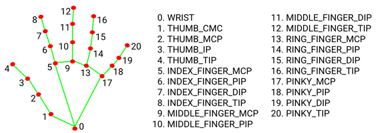

伸ばした指の本数を数える
なにものか？
Mediapipe Handを使って、伸ばした指の本数を数えるプログラムです。

Mediapipe Hand の Landmark

・TIP：指先
・DIP(distal interphalangeal joint)：指の第一関節
・PIP(proximal interphalangeal joint)：指の第二関節
・MCP(metacarpophalangeal joint)：指の第三関節(指の付け根、根本）
・CMC(carpometacarpal joint)：指の第四関節
なぜか、親指だけ、DIPとPIPに分かれておらずIP。(そのため)第四関節(CMC)が必要になる。
名称はそういうものとして、各指に対して
・手首～指のつけ根ベクトル
・指のつけ根～指先ベクトル
の角度を求め、閾値未満か以上かで、伸ばしている/折りたたんでいる、を判定する。
環境構築方法
pip install mediapipe opencv-python
使い方
python src\count_the_number_of_outstretched_fingers.py
USBカメラが USB ch0以外に接続されている場合は、
cap = cv2.VideoCapture(0)
の 0 をチャネル番号に変更してください。
色々課題がありますが対応しておりません。
・mediapipeを更新したら警告がいくつか表示される。
・遷移中にばたつかないように、検出回数でフィルターを掛けるなどが必要かもしれない。
・手首～指先が欠けると正常にカウントできない。
等々